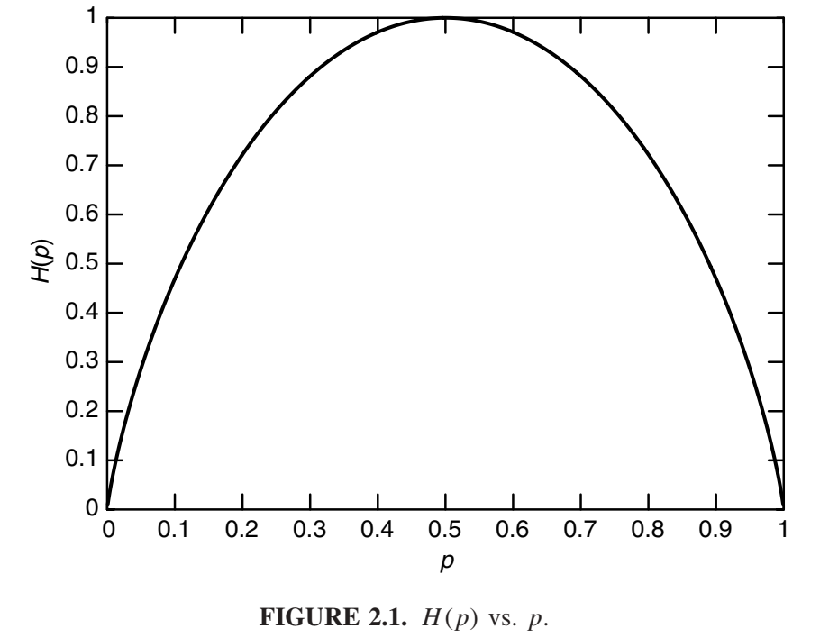

熵
我们首先引入熵的概念，它是衡量随机变量不确定性的指标。设 X 是一个离散随机变量，其字母为 X，概率质量函数 \(p(x) = Pr\{X = x\}, x\in \mathcal{X}\)。为了方便起见，我们将概率质量函数表示为 p(x)，而不是 \(p_X(x)\)。因此，p(x) 和 p(y) 指的是两个不同的随机变量，实际上分别是不同的概率质量函数 \(p_X(x)\) 和 \(p_Y(y)\)。
定义 离散随机变量 X的熵\(H(X)\)定义为
\[H(X) = -\sum_{x\in \mathcal{X}}p(x)\ \text{log}\ p(x). \tag{2.1}\]
我们也将上述量写为 H(p)。对数的底为2，熵熵以比特（bit）表示。例如，公平抛硬币的熵是1比特。我们将使用 \(0\ \text{log}\ 0 = 0\) 的约定，这很容易通过连续性证明，因为当 \(x \rightarrow 0\) 时 \(x\ \text{log}\ x \rightarrow 0\)。添加零概率项不会改变熵。
如果对数的底数是 b，我们将熵表示为 Hb(X)。如果对数的底数是 e，则熵以纳 (n) 为单位。除非另有说明，所有对数都以 2 为底，因此所有熵都以比特 (bit) 为单位。注意，熵是 X 分布的函数。它不依赖于随机变量 X 的实际值，而仅依赖于概率。
我们用 E 表示期望。因此，如果\(X \sim p(x)\)，则随机变量 \(g(X)\) 的期望值写为
\[E_p g(X) = \sum_{x\in \mathcal{X}}g(x)p(x), \tag{2.2}\]
或者简化为\(E_g(X)\)，当从上下文理解概率质量函数时。当 \(g(X) = \text{log}\frac{1}{p(X)}\)时，我们将对 \(p(x)\)下 \(g(X)\) 的怪异自指期望产生特别的兴趣。
注 X的熵也可以解释为随机变量\(\text{log}\frac{1}{p(X)}\)的期望值，其中，X根据概率质量函数\(p(x)\)抽取的。因此， \[H(X) = E_p\ \text{log}\frac{1}{p(X)}. \tag{2.3}\]
熵的这种定义与热力学中的熵的定义相关。一些联系稍后探索。通过定义随机变量的熵必须满足的某些性质，可以公理化地推导出熵的定义。该方法展示在问题2.46。我们不使用公理方法来证明熵的定义，而是表明它是许多自然问题的答案，例如“随机变量的最短描述的平均长度是多少？”首先，我们推导出该定义的一些直接结果。
引理 2.1.1 \[H(X) \ge 0.\] 证明： \(0 \le p(x) \le 1\)意味着 \(\text{log}\frac{1}{p(x)} \ge 0.\)
引理 2.1.2 \[H_b(X) = (log_b a)H_a(X).\]
证明： \(log_b p = log_b a\ log_a\ p.\)
熵的第二个性质可以改变定义中对数的底。熵可以从一个底变换到另一个，通过乘以适当的因子。
示例 2.1.1 设 \[ X = \begin{cases} &1\quad&\text{概率 p}, \\ &0\quad&\text{概率 1- p}. \end{cases} \tag{2.4} \]
那么 \[H(X) = -p\ \text{log}\ p - (1 - p)\text{log}(1-p) \stackrel{def}{=} H(p). \tag{2.5}\]
特别地，当\(p = \frac{1}{2}\)时，\(H(X) = 1\)。函数H（p）的图形如图2.1所示。该图形展示了熵的一些基本属性：它是分布的凹函数，当p=0或1时等于0。这是有道理的，因为当p=0或1时，变量不是随机的，也没有不确定性。类似的，当\(p = \frac{1}{2}\)时，不确定性最大，同时也对应着熵的最大值。

示例 2.1.2 设
\[ X = \begin{cases} &a\quad&\text{概率}\frac{1}{2},\\ &b\quad&\text{概率}\frac{1}{4},\\ &c\quad&\text{概率}\frac{1}{8},\\ &d\quad&\text{概率}\frac{1}{8}. \end{cases} \tag{2.6} \]
X的熵为
\[H(X) = -\frac{1}{2}\ \text{log}\ \frac{1}{2}-\frac{1}{4}\ \text{log}\ \frac{1}{4}-\frac{1}{8}\ \text{log}\ \frac{1}{8}-\frac{1}{8}\ \text{log}\ \frac{1}{8} = \frac{7}{4}\ bits.\tag{2.7}\]
假设我们希望用最少数量的二元问题来确定 X 的值。一个有效的第一个问题是“X = a 吗？”，这将概率分成两半。如果第一个问题的答案为“否”，则第二个问题可以是“X = b 吗？”，第三个问题可以是“X = c 吗？”。由此得出所需的二元问题的预期数量为 1.75。这也就是确定 X 值所需的二元问题的最小预期数量。在第五章中，我们将证明确定 X 值所需的二元问题的最小预期数量介于 H(X) 和 H(X) + 1 之间。